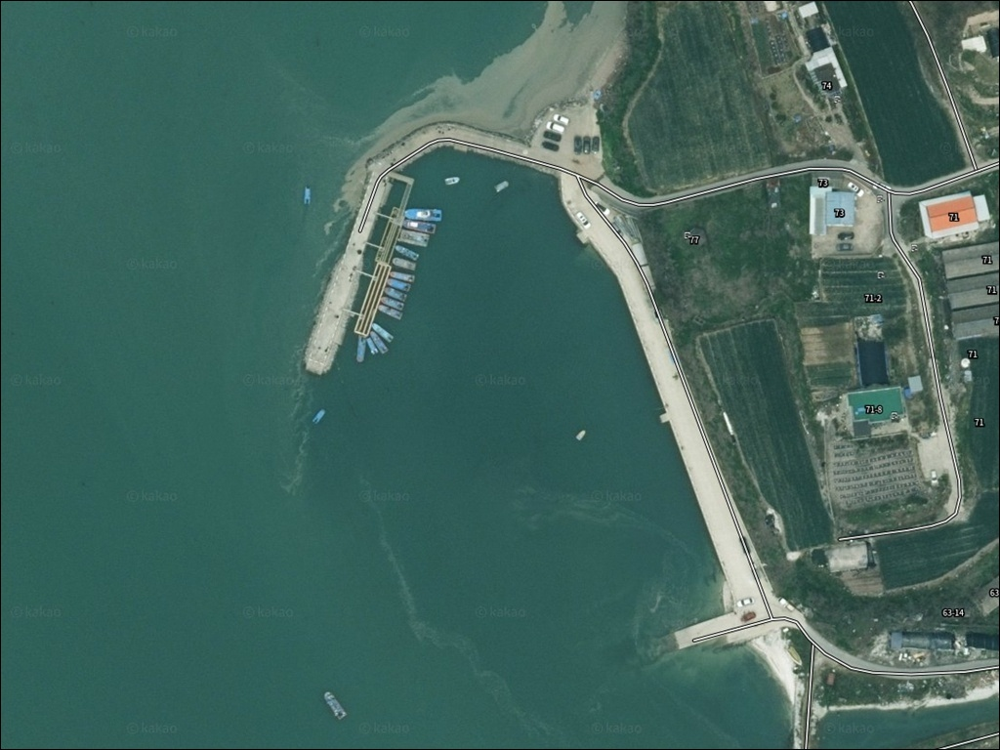
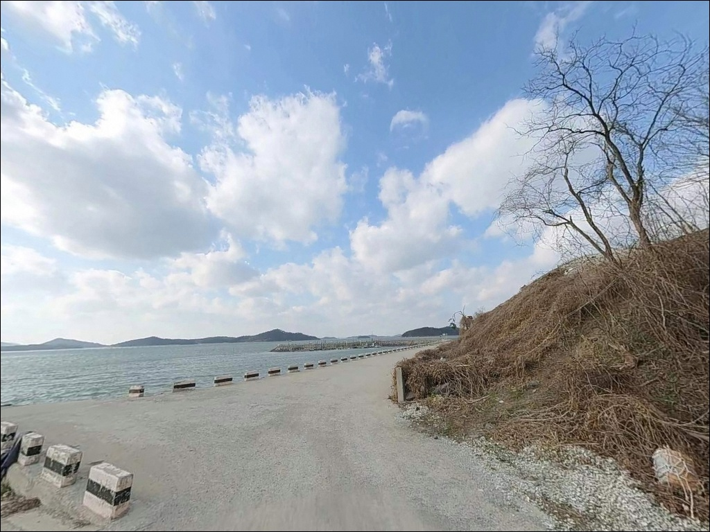
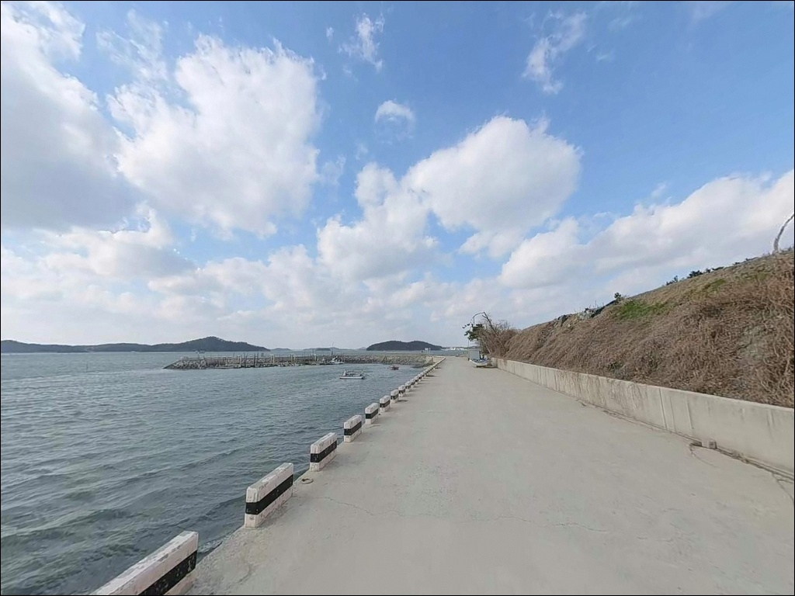
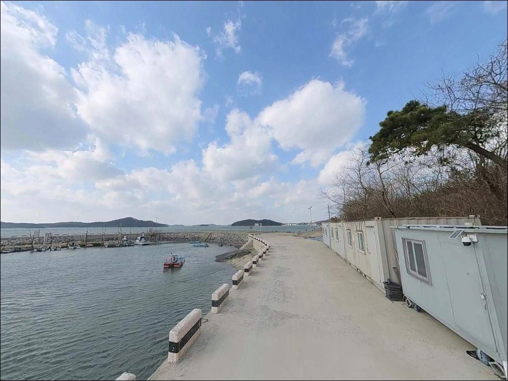
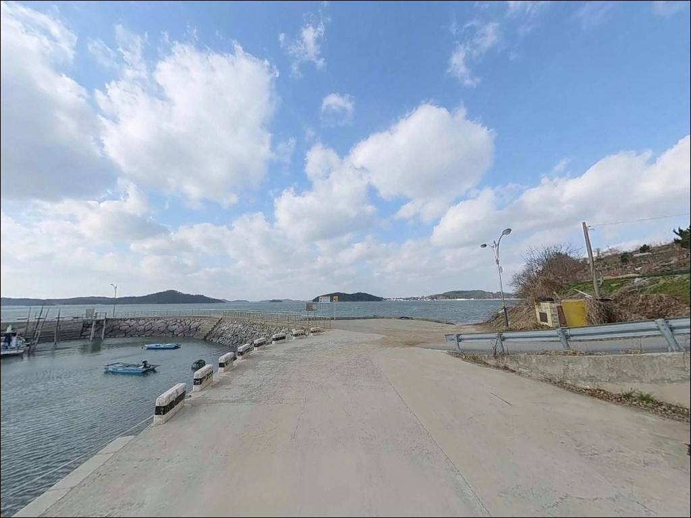
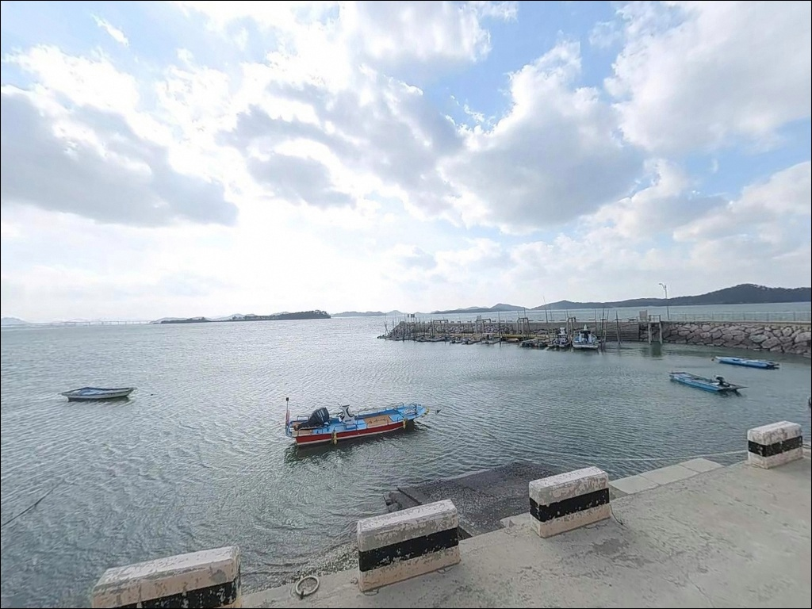
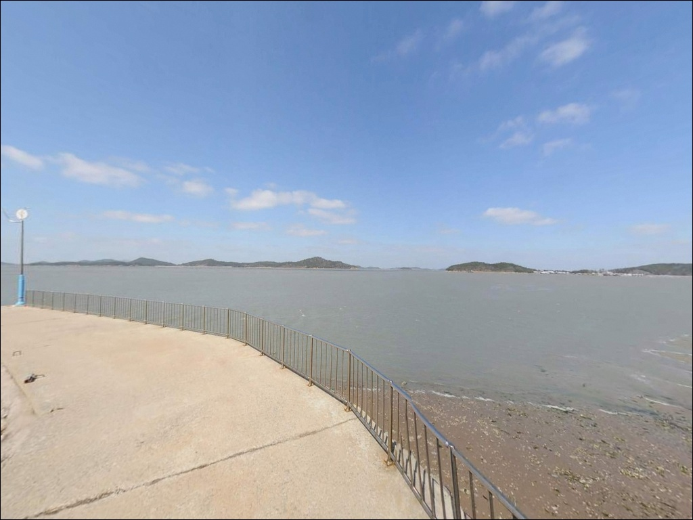
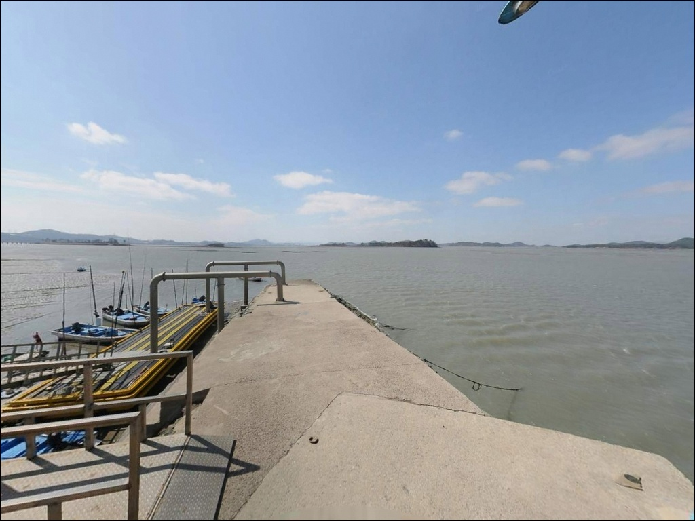
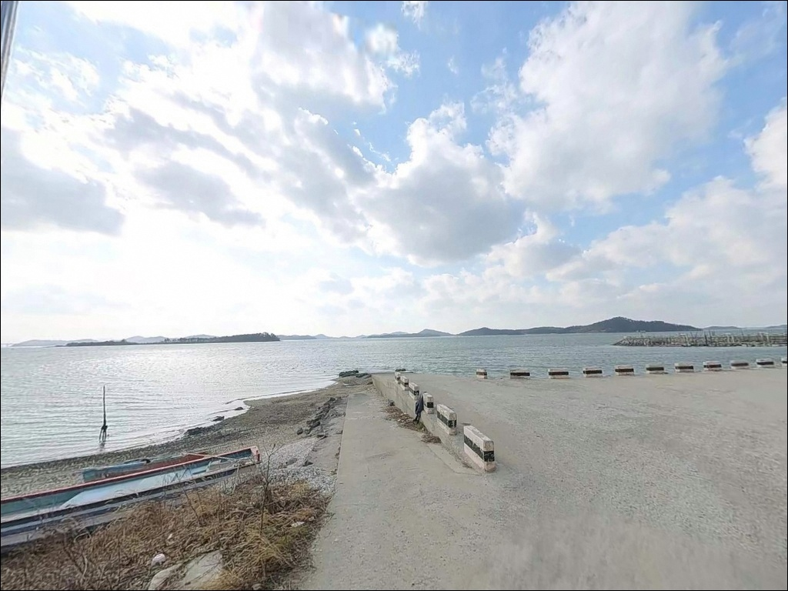

왕산리 선착장, 전남 무안군 고요함이 매력인 차박, 낚시 감성 장소


포인트 안내
왕산리 선착장
전남 무안군 삼향읍 왕산리 1449
물때 확인 없이 왕산리 선착장에 도착하면
선착장 앞은 갯벌이 드러난 채
낚시 자리 자체가 사라집니다.
무안 삼향읍 서해안은 조수 간만의 차가 크고
수심이 얕아, 간조 시에는
어떤 채비로도 정상적인 낚시가 되지 않는 지형입니다.
이 글은 왕산리 선착장의 진입 환경,
지형 구조, 낚시 방식 적합성,
물때 판단 기준에 집중합니다.
조황 단정이나 어종 보장은
이 글의 범위에 포함되지 않습니다.
전남 무안군 삼향읍 왕산리,
봉수산 자락 아래 서해와 접하는
조용한 어촌 마을에 자리한 소규모 선착장입니다.
공식 낚시 포인트로 알려진 기록은 많지 않지만,
무안 서해안 특유의 갯벌 조류 환경을 갖춰
물때를 아는 낚시인에게는 접근해볼 만한 탐방형 포인트입니다.

1. 진입 동선과 포인트 접근성
마을 내부 도로를 통해 선착장에 접근하는 구조입니다.
진입로 폭이 넓지 않은 농어촌형 마을길이며,
대형 SUV나 캠핑 장비를 갖춘 차량이라면
출발 전 위성지도로 진입로를
확인하고 가는 편이 안전합니다.
선착장 인근 회차 공간은 넉넉하지 않습니다.
소형 선착장 구조 특성상
어선 조업 차량이 우선 동선을 차지하는 경우가 있어,
진입 전 상황을 파악한 뒤
주차 위치를 결정하는 것이 첫 번째 판단입니다.
선착장 인근 공터나
마을 진입부 도로변이 주차 후보가 됩니다.
선착장 인근 일대에서 개발 공사가
진행 중일 가능성이 있습니다.
진입로나 주변 환경이 변화되어 있을 수 있어,
방문 전 현지 상황을 한 번 더 확인하는 편이
헛걸음을 줄이는 가장 확실한 방법입니다.

2. 차박 환경과 야간 체류 여건
왕산리는 민가가 가까운 소규모 어촌 마을입니다.
야간 차량 통행은 적은 편이지만,
마을 구조상 완전한 고립형 야간 환경은
기대하기 어렵습니다.
프라이버시 확보 면에서는 제한적이며,
가로등이 일부 존재할 가능성이 있습니다.
낚시를 마친 뒤 짧게 머무는
대기형 차박 용도로는 시도해볼 수 있으나,
주차 공간이 좁고
주변 개발 상황으로 인해
장시간 체류형 차박 거점으로 삼기에는 여건이 제한적입니다.
출발 전 현지 상황을 먼저 확인하는 것이
기본 준비입니다.


3. 주변 편의시설 및 인프라 현황
왕산리 선착장 인근에는
편의점이나 식당을 기대하기 어렵습니다.
소규모 어촌 마을 특성상
완전 자급 체제로 진입하는 것이 현실적인 준비입니다.
식수, 얼음, 낚시 소품 모두
출발 전에 갖춰야 합니다.
남악신도시 방향으로 차량 이동 시
대형 마트, 편의점, 식당 등
생활 인프라를 이용할 수 있습니다.
목포 방면도 접근 가능한 위치로,
출발 전 소품이나 식료품 준비는
이 방향에서 마치고 진입하는 것이 효율적입니다.
응급 상황 발생 시에도
남악 및 목포 방향 의료 인프라를
활용할 수 있습니다.

4. 낚시 여건이 달라지는 진입 전 준비사항
물때가 전부입니다.
바다타임에서 무안 삼향 기준 당일 물때를 미리 확인하고,
중들물 이후 만조 전후 시간대에 맞춰
입장 시각을 계획하는 것이 기본 전략입니다.
간조 시간대에는 낚시 자체가 성립하지 않는 지형이라는 점을
출발 전에 먼저 받아들이는 것이 이 포인트 공략의 출발입니다.
서해는 기상 변화 속도가 빠릅니다.
기상청 해상 예보를 당일 아침 다시 확인하고,
바람 세기와 방향까지 파악한 뒤
출발 여부를 최종 결정하는 편이 좋습니다.
서해 바람은 체감 기온과 낚시 여건 모두에
직접 영향을 줍니다.
야간 낚시를 계획한다면
헤드랜턴은 필수입니다.
선착장 발판은 이끼나 해조류로
미끄러울 수 있으므로
미끄럼 방지 신발 착용과 구명조끼 착용이 기본입니다.
갯벌 쪽으로는 절대 진입하지 않는 것이
서해 낚시의 안전 원칙입니다.

5. 지형 기반 낚시 여건 분석
왕산리 선착장은 서해 갯벌형 내만 구조를 갖춘
소형 선착장입니다.
선착장 주변은 완만한 경사의 갯벌 해안선이 이어지는 지형으로,
무안 삼향읍 서해안 특유의 조수 간만 차가
낚시 여건을 결정하는 핵심 변수입니다.
간조 시에는 갯벌이 넓게 드러나
낚시 자리가 사라집니다.
반대로 만조 전후에는
선착장 끝단 주변으로 일정 수심이 형성되며,
수로가 지나는 구간에서
조류 흐름이 살아나는 구조입니다.
유효 낚시 시간대는 중들물 이후
만조 전후 2~3시간 내외로 좁은 편이며,
이 타이밍을 정확히 맞추는 것이
이 포인트의 핵심 조건입니다.
수심은 전반적으로 얕은 편이며,
선착장 끝단이 수심이 상대적으로
확보되는 구간입니다.
채비를 멀리 던진 뒤
갯골 방향을 탐색하는 방식이
이 지형에 맞는 공략 방법입니다.
왕산리 선착장 주변 최신 조황은
가기 전에 반드시 검색해 보시기 바랍니다.
서해 갯벌형 선착장에서 만조 타이밍을 놓치면
어떤 채비를 써도 조과를 기대하기 어렵습니다.


6. 포인트 지형에 어울리는 낚시 스타일
원투낚시가 이 포인트의 지형 조건과
가장 잘 맞는 방식입니다.
갯벌 경계선 너머 갯골이 지나는 구간을 목표로
채비를 멀리 던지는 방식이 현실적인 공략법입니다.
이 지형에서 기대해볼 수 있는 어종은
망둥어, 붕장어 등 바닥층 어종 중심이며,
만조 타이밍에 집중하는 것이 기본 운용 방법입니다.
찌낚시도 선착장 끝단에서 시도해볼 수 있습니다.
만조 전후 수심이 형성되는 구간에서
숭어 등 회유 어종을 노리는 방식으로 적합하며,
조류 흐름이 살아있을 때 효율적입니다.
선착장 발판 주변을 탐색하는
근거리 방식으로 운용하는 것이 이 지형에 맞습니다.
민장대를 활용한 생활낚시도
이 선착장의 규모와 수심 조건에 잘 맞습니다.
복잡한 장비 없이 선착장 벽면이나
끝단 가까이를 탐색하는 방식으로 접근할 수 있습니다.
무안 삼향읍 일대 서해안 조건을 고려하면
봄철에는 감성돔이 회유할 가능성이 있으나,
왕산리 선착장 고유의 확인된 기록은 없습니다.

7. 대안 포인트와 플랜 B 동선
왕산리 선착장에서 조류나 수심 조건이
여의치 않을 때,
같은 무안 서해안 라인에서 먼저 고려할 대안은
무안 톱머리 방파제(망운면 피서리 방향)입니다.
무안 서해안에서 접근이 비교적 편한 포인트로,
봄철 감성돔과 가을 주꾸미 시즌에
낚시인들이 찾는 곳입니다.
주차 공간도 어느 정도 확보된 구조입니다.
무안 구로리 선착장(청계면 방향)도
같은 서해안 라인에서 이동 가능한 대안 포인트입니다.
원투낚시 중심으로 운용하며,
봄 시즌 감성돔 공략이 이루어지는 곳입니다.
역시 만조 타이밍에 집중해야 하는
서해형 포인트 특성은 왕산리와 동일합니다.
차박 여건을 함께 고려한다면
무안낙지공원 노을길야영장(망운면 송현리 방향)이
대안이 될 수 있습니다.
야영장이 운영되는 시설로
낚시와 차박을 연계하기에 적합한 구조이며,
방문 전 운영 여부는
무안군청에 사전 확인하는 것이 안전합니다.

물때 하나를 알면
왕산리 선착장이 달라 보입니다
원투낚시나 생활낚시를 즐기는 낚시인이라면
왕산리 선착장의 갯벌 내만 구조가
물때에 따라 전혀 다른 얼굴을 보여주는 포인트임을
이해하는 것이 출발입니다.
공식 낚시 포인트로 알려지지 않은 만큼
인파가 없는 조용한 환경에서
물때를 맞춰 단독으로 공략하기 좋은 탐방형 포인트입니다.
반면 간조 시간대에 도착하거나,
위성지도 확인 없이 대형 차량으로 진입하거나,
주변 개발 상황을 파악하지 않고 찾아가면
헛걸음이 될 가능성이 높습니다.
물때 확인, 진입로 점검, 자급 준비,
이 세 가지를 갖추고 간다면
무안 서해안의 조용한 낚시 경험을
만들어볼 수 있는 곳입니다.
차박 낚시 여행자라면
왕산리 선착장을 첫 탐방지로 삼되,
여건이 맞지 않을 경우 톱머리 방파제나
노을길야영장을 대안으로 엮는 동선이
무안 서해안을 가장 알차게 즐기는 방법입니다.
왕산리 선착장은 공식 낚시 포인트로 알려지지 않은 만큼,
출조 전 현지 상황 확인이
방문 성패를 가르는 조건입니다.